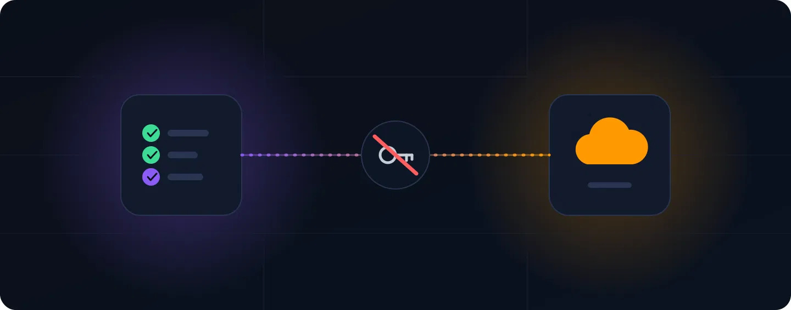
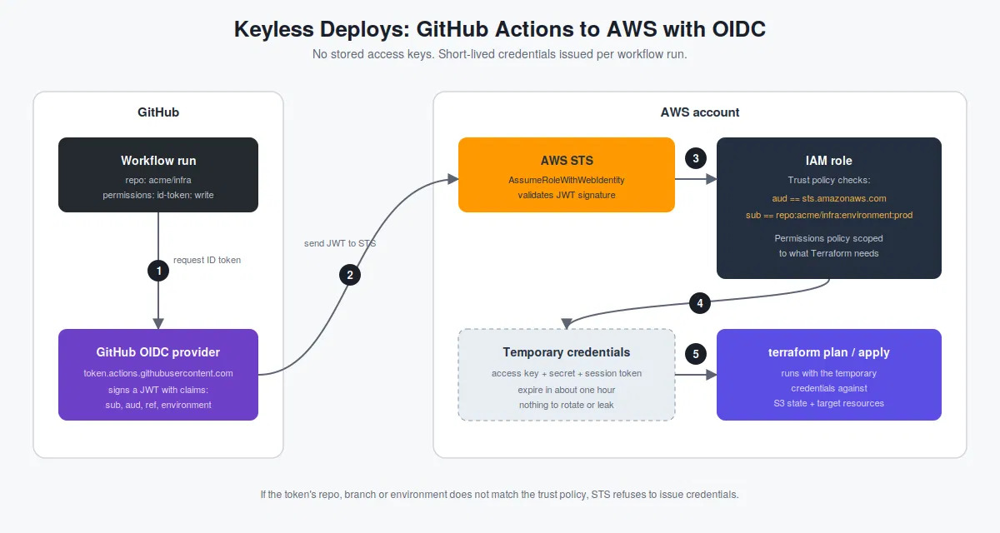

Deploying to AWS from GitHub Actions Without Access Keys: OIDC and Terraform
Somewhere in most organizations there is a GitHub secret named
AWS_ACCESS_KEY_ID that belongs to an IAM user created years ago.
It has more permissions than the pipeline needs, it has never been rotated,
and nobody is sure which repositories can read it. It works, so it stays.
That secret is the weak point of the whole delivery pipeline. A long-lived key can be copied out of a compromised workflow, a leaked log or a forked repository, and it stays valid until someone notices. The fix is not better rotation. The fix is not having a key at all.
GitHub Actions can prove its identity to AWS using OpenID Connect (OIDC). AWS then hands the workflow credentials that expire in about an hour, scoped to one role, usable only from the repository, branch or environment that was approved. This post builds that setup end to end with Terraform: the identity provider, separate roles for planning and applying, and the two workflows that use them.
📋 Table of Contents
- How the handshake works
- The design: two roles, two trust boundaries
- Step 1: Create the OIDC identity provider
- Step 2: The plan role
- Step 3: The apply role
- Step 4: The pull request workflow
- Step 5: The deploy workflow
- Verifying it works
- Common pitfalls
- Migrating an existing pipeline
- Where this goes next
How the handshake works
Every workflow run can ask GitHub for a signed JSON Web Token (JWT). The token carries claims describing where the run came from:
| Claim | Example value | Meaning |
|---|---|---|
iss |
https://token.actions.githubusercontent.com
|
Who issued the token |
aud |
sts.amazonaws.com
|
Who the token is meant for |
sub |
repo:acme/infra:environment:prod
|
Repository plus the context of the run |
ref |
refs/heads/main
|
Branch or tag that triggered the run |
The flow, matching the numbers in the diagram above:
-
The workflow requests an ID token from GitHub. This only works when the
workflow declares
permissions: id-token: write. -
The token is sent to AWS STS through
AssumeRoleWithWebIdentity. - STS verifies the signature against GitHub's public keys, then evaluates the trust policy of the requested IAM role.
- If the claims satisfy the trust policy, STS returns temporary credentials.
- Terraform runs with those credentials. When the job ends, they expire.

GitHub Actions requests an OIDC token, AWS STS validates it, and the workflow receives temporary credentials through an IAM role.
The sub claim changes with context, which is what makes
fine-grained roles possible:
| Run context | sub value |
|---|---|
| Pull request |
repo:acme/infra:pull_request
|
| Push to a branch |
repo:acme/infra:ref:refs/heads/main
|
| Job that targets an environment |
repo:acme/infra:environment:prod
|
When a job targets a GitHub environment, the environment form wins over
the branch form. Environments support required reviewers, so a trust policy
pinned to environment:prod means AWS credentials for production
can only exist after a human approved the deployment.
The design: two roles, two trust boundaries
A single all-powerful role defeats most of the benefit. The setup here uses two:
| Role | Trusted for | Permissions |
|---|---|---|
gha-terraform-plan
|
Pull requests | Read-only access to AWS and to the Terraform state |
gha-terraform-apply
|
The prod environment only
|
Write access, scoped to what the stack manages |
Pull requests are the riskiest trigger because they can contain arbitrary code. A malicious or careless change to a workflow file in a PR can run whatever it wants, but it can only obtain the plan role, which cannot change anything. Production write access stays behind the protected environment.
Step 1: Create the OIDC identity provider
This is bootstrap code. It runs once per AWS account, using whatever admin access exists today. After this, the pipeline manages itself.
# bootstrap/versions.tf
terraform {
required_version = ">= 1.10"
required_providers {
aws = {
source = "hashicorp/aws"
version = ">= 5.81"
}
}
}
provider "aws" {
region = var.region
}# bootstrap/variables.tf
variable "region" {
type = string
default = "ap-south-1"
}
variable "github_org" {
type = string
}
variable "github_repo" {
type = string
}
variable "state_bucket" {
description = "S3 bucket that holds the Terraform state for this repo"
type = string
}
variable "apply_policy_arns" {
description = "Managed policies attached to the apply role. Scope these to what the stack manages."
type = list(string)
}# bootstrap/oidc.tf
resource "aws_iam_openid_connect_provider" "github" {
url = "https://token.actions.githubusercontent.com"
client_id_list = ["sts.amazonaws.com"]
}Two notes on this resource
-
No thumbprint needed.
Older guides hardcode a certificate thumbprint.
AWS now validates GitHub's token endpoint against its own library
of trusted root CAs, and recent versions of the AWS provider treat
thumbprint_listas optional. -
One provider per URL per account.
If another team already created the GitHub provider in the account,
a second one fails with
EntityAlreadyExists. Reference the existing one with adata "aws_iam_openid_connect_provider"block, or import it.
Step 2: The plan role (pull requests, read-only)
# bootstrap/role_plan.tf
data "aws_iam_policy_document" "plan_trust" {
statement {
effect = "Allow"
actions = ["sts:AssumeRoleWithWebIdentity"]
principals {
type = "Federated"
identifiers = [
aws_iam_openid_connect_provider.github.arn
]
}
condition {
test = "StringEquals"
variable = "token.actions.githubusercontent.com:aud"
values = ["sts.amazonaws.com"]
}
condition {
test = "StringEquals"
variable = "token.actions.githubusercontent.com:sub"
values = [
"repo:${var.github_org}/${var.github_repo}:pull_request"
]
}
}
}
resource "aws_iam_role" "plan" {
name = "gha-terraform-plan"
assume_role_policy = data.aws_iam_policy_document.plan_trust.json
max_session_duration = 3600
}
resource "aws_iam_role_policy_attachment" "plan_readonly" {
role = aws_iam_role.plan.name
policy_arn = "arn:aws:iam::aws:policy/ReadOnlyAccess"
}
data "aws_iam_policy_document" "state_read" {
statement {
actions = ["s3:ListBucket"]
resources = [
"arn:aws:s3:::${var.state_bucket}"
]
}
statement {
actions = ["s3:GetObject"]
resources = [
"arn:aws:s3:::${var.state_bucket}/*"
]
}
}
resource "aws_iam_role_policy" "plan_state" {
name = "state-read"
role = aws_iam_role.plan.id
policy = data.aws_iam_policy_document.state_read.json
}
The role can read state but not write it, so the plan job runs with
-lock=false. A read-only plan does not need to hold the state lock,
and skipping it keeps the role from needing any write permission on the bucket.
Step 3: The apply role (production environment only)
# bootstrap/role_apply.tf
data "aws_iam_policy_document" "apply_trust" {
statement {
effect = "Allow"
actions = ["sts:AssumeRoleWithWebIdentity"]
principals {
type = "Federated"
identifiers = [
aws_iam_openid_connect_provider.github.arn
]
}
condition {
test = "StringEquals"
variable = "token.actions.githubusercontent.com:aud"
values = ["sts.amazonaws.com"]
}
condition {
test = "StringEquals"
variable = "token.actions.githubusercontent.com:sub"
values = [
"repo:${var.github_org}/${var.github_repo}:environment:prod"
]
}
}
}
resource "aws_iam_role" "apply" {
name = "gha-terraform-apply"
assume_role_policy = data.aws_iam_policy_document.apply_trust.json
max_session_duration = 3600
}
resource "aws_iam_role_policy_attachment" "apply" {
for_each = toset(var.apply_policy_arns)
role = aws_iam_role.apply.name
policy_arn = each.value
}
data "aws_iam_policy_document" "state_write" {
statement {
actions = ["s3:ListBucket"]
resources = [
"arn:aws:s3:::${var.state_bucket}"
]
}
statement {
actions = [
"s3:GetObject",
"s3:PutObject",
"s3:DeleteObject"
]
resources = [
"arn:aws:s3:::${var.state_bucket}/*"
]
}
}
resource "aws_iam_role_policy" "apply_state" {
name = "state-write"
role = aws_iam_role.apply.id
policy = data.aws_iam_policy_document.state_write.json
}# bootstrap/outputs.tf
output "plan_role_arn" {
value = aws_iam_role.plan.arn
}
output "apply_role_arn" {
value = aws_iam_role.apply.arn
}
What goes into apply_policy_arns depends on what the stack manages.
AdministratorAccess is tempting and acceptable for the first bootstrap
run, but the end state should be a policy that lists only the services Terraform
touches, ideally combined with a permissions boundary.
The state backend in the Terraform code being deployed uses S3 native locking (Terraform 1.10 and later):
terraform {
backend "s3" {
bucket = "acme-tfstate-prod"
key = "infra/terraform.tfstate"
region = "ap-south-1"
encrypt = true
use_lockfile = true
}
}
Teams still using a DynamoDB lock table need to add
dynamodb:GetItem, PutItem and
dynamodb:DeleteItem on that table to the apply role.
Step 4: The pull request workflow
# .github/workflows/terraform-plan.yml
name: terraform-plan
on:
pull_request:
paths:
- "infra/**"
permissions:
id-token: write
contents: read
jobs:
plan:
runs-on: ubuntu-latest
defaults:
run:
working-directory: infra
steps:
- uses: actions/checkout@v4
- uses: aws-actions/configure-aws-credentials@v4
with:
role-to-assume: arn:aws:iam::111111111111:role/gha-terraform-plan
aws-region: ap-south-1
- name: Confirm identity
run: aws sts get-caller-identity
- uses: hashicorp/setup-terraform@v3
- run: terraform init -input=false
- run: terraform validate
- run: terraform plan -input=false -lock=false -no-colorThe Confirm identity step is cheap and makes debugging much easier. The output shows the assumed role and a session name that traces back to the workflow run.
Pull requests from forks do not receive an id-token by default,
so a fork cannot obtain even the plan role. That is the intended behavior
for public repositories.
Step 5: The deploy workflow
# .github/workflows/terraform-apply.yml
name: terraform-apply
on:
push:
branches: [main]
paths:
- "infra/**"
permissions:
id-token: write
contents: read
concurrency:
group: terraform-apply-prod
cancel-in-progress: false
jobs:
apply:
runs-on: ubuntu-latest
environment: prod
defaults:
run:
working-directory: infra
steps:
- uses: actions/checkout@v4
- uses: aws-actions/configure-aws-credentials@v4
with:
role-to-assume: arn:aws:iam::111111111111:role/gha-terraform-apply
aws-region: ap-south-1
- uses: hashicorp/setup-terraform@v3
- run: terraform init -input=false
- run: terraform apply -input=false -auto-approve
Two settings outside the YAML complete the picture. In the repository settings,
create the prod environment, add required reviewers, and restrict
deployments to the main branch.
Then protect main so every change arrives through a pull request
that already ran the plan job. The role trust policy, environment rules,
and branch protection each cover a gap the others leave.
Verifying it works, and proving it is locked down
A successful run is only half the test. The more useful check is confirming that the wrong callers fail.
-
Positive test.
Open a pull request that touches
infra/. The plan job should print an assumed-role ARN forgha-terraform-plan. -
Negative test 1.
Change the plan workflow temporarily to assume the apply role.
The step should fail with
Not authorized to perform sts:AssumeRoleWithWebIdentity. -
Negative test 2.
Copy the apply workflow into a different repository in the same organization.
It should fail because the
subnames the original repository. -
Audit trail.
In CloudTrail, each assumption appears as an
AssumeRoleWithWebIdentityevent.
Common pitfalls
-
Wildcards in
sub. A condition likerepo:acme/*lets every repository in the organization assume the role, including a brand-new repository. Pin the repository and environment or branch. -
Missing
audcondition. Always requirests.amazonaws.com. -
StringLikewhereStringEqualsworks. Pattern matching widens the trust surface. -
Forgetting
id-token: write. The credentials step fails because the job never received a token. -
Mismatched
subcasing and format. The comparison is case-sensitive. - Session length. A long apply that outlasts the credentials can fail midway. Either split the stack or increase the role session duration.
- Duplicate OIDC providers. One provider per GitHub OIDC URL can exist in an AWS account.
Migrating an existing pipeline
- Run the bootstrap code to create the provider and both roles.
-
Switch the workflows to
role-to-assumeand remove the access key inputs. - Run a plan and an apply through the new path and confirm they succeed.
-
Delete the
AWS_ACCESS_KEY_IDandAWS_SECRET_ACCESS_KEYrepository secrets. - Deactivate the IAM user's access keys, wait a few days for anything unexpected to surface, then delete the keys and the user.
Where this goes next
-
One role per environment.
Repeat the pattern for
devandstagingwith their own environments and accounts. -
Reusable workflows.
Platform teams can publish a shared deploy workflow and restrict
the trust policy with the
job_workflow_refclaim. - Plan output in the pull request. Posting the plan as a PR comment turns review into a real change-approval step.
- The same pattern beyond AWS. Azure and Google Cloud both support federated credentials for GitHub Actions with the same general pattern.
The principle holds in every variation: credentials should be issued at the moment of need, to a specific job, and expire when the job ends.